귀금속가공기능사 (2006-04-02 기출문제)
1과목: 공예디자인
1. 그림과 같은 석탑에서 얻을수 있는 선의 느낌은?
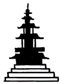
- 강직, 장중한 느낌
- 평화, 고요한 느낌
- 온화, 부드러운 느낌
- 변화, 운동적인 느낌
(정답률: 92%)

2. 다음 중 질감을 표현한 것은?
- 거친 느낌
- 즐거운 느낌
- 화려한 느낌
- 가까운 느낌
(정답률: 95%)
3. 아르누보와 직접적인 관계가 없는 것은?
- 청춘양식
- 시세션
- 신예술양식
- 고딕양식
(정답률: 87%)
4. 다음 중 십장생에 속하지 않는 것은?
- 해
- 물
- 용
- 사슴
(정답률: 73%)
5. 금속 파이프의 전단면도를 바르게 표시한 것은?
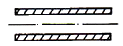
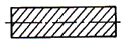
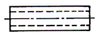
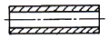
(정답률: 90%)
6. 전경(도)과 배경(지)의 설명 중 맞는 것은?
- 면적이 큰 부분이 전경이 되고, 작은 부분이 배경이 되기 쉽다.
- 상부와 하부로 나누어진 그림은 하부가 전경이 되기 쉽다.
- 여러 형이 같이 있을 때는 대칭형이 배경이 도기 쉽다.
- 윤곽선의 외부는 전경이 되기 쉽다.
(정답률: 70%)
7. 순색에 어두운 회색을 섞은 결과는?
- 명청색
- 암청색
- 명탁색
- 암탁색
(정답률: 62%)
8. 기능주의에 의하여 기계문명 시대에 맞는 디자이너를 육성하고 기능미의 사조를 조직적으로 체계화한 운동은?
- 바우하우스
- 독일공작연맹
- 시세션
- 퓨리즘
(정답률: 79%)
9. 제도에서 중심선, 은선, 외형선이 겹칠 대는 어느 선을 우선하여 표시하는가?
- 은선
- 외형선
- 중심선
- 가상선
(정답률: 75%)
10. 먼저 본 색의 영향으로 나중에 본 색이 다르게 보이는 현상을 무엇이라고 하는가?
- 계시대비
- 면적대비
- 한난대비
- 명도대비
(정답률: 89%)
11. 채도란(Saturation)?
- 색채의 맑고 탁한 정도
- 색채의 밝고 어두운 농도
- 색채의 반사정도
- 색채의 고운정도
(정답률: 86%)
12. 수송기관의 색채 설계에서 바람직한 조건이 아닌 것은?
- 도장 공정이 간단할수록 좋다.
- 한색 계통의 색이나 광택이 강한 색료가 좋다.
- 주목성이 있는 배색이 좋다.
- 팽창성과 진출성이 있는 것이 좋다.
(정답률: 73%)
13. 채도가 높은 색 위주의 배색 느낌은?
- 온화한 느낌
- 경쾌한 느낌
- 화려함, 자극적
- 순수함, 정적
(정답률: 78%)
14. 다음 중 모따기 기호는?
- ø
- P
- C
- t
(정답률: 79%)
15. 가산혼합에서 3원색 모두를 혼합한 색은?
- 빨강색
- 녹색
- 청색
- 백색
(정답률: 88%)
16. 주어진 각을 5등분하는 방법(근사법)에서 D점은 어떻게 구하는가?
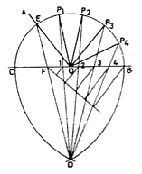
- O에서 수직 2등분 선을 그어 구한다.
- B와 C에서 BC를 반지름으로 하는 원호를 그린 교점
- P4 점에서 F를 지나는 선을 그리고 O에서 수직 이등분선을 그린 그 교점
- P1과 P3의 2등분 수직선
(정답률: 59%)
17. 아래의 도형은 어떠한 입체의 전개도인가?
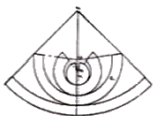
- 원뿔
- 구
- 원주
- 타원주
(정답률: 76%)
18. 다음 입체도의 우측면도는?
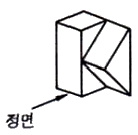
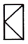
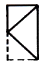
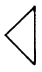
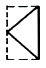
(정답률: 91%)
19. 명도의 효과가 지배적인 감정은?
- 수수함
- 흥분감
- 온도감
- 중량감
(정답률: 87%)
20. 균형(balance)에 해당되지 않는 것은?
- 비대칭
- 대칭
- 강조
- 비례
(정답률: 79%)
2과목: 귀금속재료
21. 다음 평면도와 같은 모양의 입체도형은?
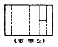
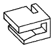
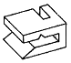
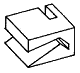
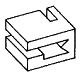
(정답률: 85%)
22. 무채색에 대한 설명으로 맞는 것은?
- 무채색에는 색상과 명도가 있다.
- 무채색에는 색상만 있다.
- 무채색에는 명도만 있다.
- 무채색은 색상,명도,채도의 3속성을 가지고있다.
(정답률: 83%)
23. 다음 중 대료의 단위 면적당 힘에 저항할 수 있는 응력을 무엇이라고 하는가?
- 신율
- 인장강도
- 전연성
- 비중
(정답률: 80%)
24. 금 합금 중 탄성율이 우수해 보석장식, 시계, 만년필의 펜촉 재료로 사용하는 것은?
- 24K
- 22K
- 18K
- 14K
(정답률: 78%)
25. 톰백(Tombac)에 대한 올바른 설명은?
- 일명 진유라고도 하며, 아연 2~3%를 함유한다.
- 일명 놋쇠라고도 하며, 아연20~30%를 함유한다
- 구리 합금 중 금색에 가깝다고 하여 모조금이라고도 한다.
- 구리 합금 중 은색에 가깝다고 하여 모조은이라고도 부르는데 주조성이 매우 낮다.
(정답률: 75%)
26. 소재의 접착부분에 대해서 침식작용이 생기지 않는 이점이 있는 땜납은?
- 황납
- 금납
- 은납
- 필라듐납
(정답률: 63%)
27. 다음 중 금의 특성으로 옳지 않은 것은?
- 비중이 커서 다른 금속과 구별이 쉽다.
- 전연성이 풍부하고, 주조가 쉽다.
- 색깔이 변하지 않는다.
- 다른 금속과 합금을 만들기 어렵다.
(정답률: 89%)
28. 다음 귀금속 중 용융점이 가장 높은 것은?
- 은
- 금
- 팔라듐
- 백금
(정답률: 78%)
29. 칠보의 제작기법 중 무선(無線)칠보에 속하며 대리석과 같은 스모그 문양을 나타내는 기법은?
- 부식칠보기법
- 조금칠보기법
- 마블칠보기법
- 형치칠보기법
(정답률: 85%)
30. 다음중에서 에메랄드(Emerald)의 주 생산국은?
- 한국
- 서독
- 콜롬비아
- 체코
(정답률: 79%)
31. 가직과 유리의 더블릿 검사에 이용하는 방법은?
- 투과판독 효과
- 레드링 효과
- 열반응 테스트
- 조흔 검사
(정답률: 74%)
32. 인체에 무독성이며, 식기, 식품 저장용 캔 등에 많이 사용되는 금속은?
- 알루미늄
- 납
- 우라늄
- 수은
(정답률: 94%)
33. 백금족 중에서 식기용 은제품, 소형시계 등 은의 변색방지에 좋아 도금용으로 가장 많이 쓰이는 것은?
- 로듐(Rhdsium)
- 루테늄(Ruthenium)
- 레늄(Rhenium)
- 오스늄(Osmium)
(정답률: 75%)
34. 은과 구리의 합금으로 비중이 10.4인 정은(sterling silver)의 은 합금 비율은?
- 95% 은 합금
- 92.5% 은 합금
- 90% 은 합금
- 80% 은 합금
(정답률: 91%)
35. 순금도금에서 미세한 입자가 균일하게 전착되어 어떠한 규격에도 합격이 가능한 안정된 도금욕은?
- 고온청화욕
- 산성욕
- 냉청화욕
- 중성욕
(정답률: 55%)
36. 은땜 중에서 은 70 ~ 75 %, 구리 20 ~ 23 %, 아연 5 ~ 7.5% 합금 비율인 것은?
- 강땜
- 중땜
- 중약땜
- 약땜
(정답률: 90%)
37. 다음 귀금속 가공법 중 화학적인 기법은?
- 주조
- 투조
- 단조
- 부식
(정답률: 89%)
38. 구리(Cu)의 특성이 아닌 것은?
- 전기 및 열의 양도체이다.
- 전연성이 좋고 가공하기 쉽다.
- 귀금속과 합금하여 사용할 수 없다.
- 아연, 주석, 니켈 등과 합금하면 귀금속적 성질을 갖는다.
(정답률: 82%)
39. 에메랄드는 다음 중 어디에 속하는 보석인가?
- 가닛
- 베릴
- 수정
- 커런덤
(정답률: 77%)
40. 은 도금용 광택제가 아닌 것은?
- 이황화탄소
- 티오황산암모늄
- 티오황산나트륨
- 염화암모니아
(정답률: 69%)
3과목: 귀금속가공
41. 다음 중 평면 줄질을 위한 방법이 아닌 것은?
- 직진법
- 사진법
- 병진법
- 수직법
(정답률: 68%)
42. 다음 금속의 열처리에대한 설명 중 틀린 것은?
- 가열 또는 냉각하여 목적에 따른 조직과 기계적 성능을 얻는다.
- 일정한 조건에서 보유 온도의 길고 짧음에 의해 조직이 변한다.
- 일정한 온도 이상으로 가열하면 확산 현상이 나타나 주조상의 변화를 일으킨다.
- 빠르게 냉각했을 때는 낮은 온도에서 안정된 조직이 된다.
(정답률: 69%)
43. 전기도금의 목적은?
- 금속의 색상을 개선하기 위하여
- 금속 가공성을 크게 하기 위하여
- 전기적 성질을 개선하기 위하여
- 경도와 인성을 증대하기 위하여
(정답률: 77%)
44. 라운드 다이아몬드의 중량을 측정하는데 사용되는 측정 공구는?
- 와이어 게이지
- 보석 게이지
- 모 게이지
- 손 게이지
(정답률: 65%)
45. 다음 중 선재 뽑기 방법 중 잘못된 것은?
- 드로잉 다이에 일감이 들어갈 수 있도록 끝부분을 예각이 되게 줄로 깎는다.
- 드로잉 집게로 예각을 보호하며 집게와 90° 수직으로 잡아 당긴다.
- 금속 대료의 각 면을 4각으로 벼림질하고 일감을 열풀림하여 시작한다.
- 일감을 자주 열풀림하고 촛농을 칠해준다.
(정답률: 66%)
46. 다음 중 가장 가는 선을 뽑을 수 있는 금속은?
- 금(Au)
- 은(Ag)
- 구리(Cu)
- 백금(Pt)
(정답률: 86%)
47. 귀금속 가공 작업시 황산처리작업방법이 옳은 것은?
- 희석 황산액은 물과 황산을 10:5의 비율로 혼합하여 위험성을 줄인다.
- 유리 비이커에 먼저 물을 붓고 황산을 용기의 안쪽 벽면을 따라 붓는다.
- 작업 중 산이 피부나 옷에 묻으면 그냥 놔둬도 된다.
- 약산이 끓을 때 뜨거운 일감을 그대로 비이커에 넣는다.
(정답률: 80%)
48. 액화석유가스의 일반적인 성질 중 잘못된 것은?
- 액체일 대는 물보다 약 0.5배 무겁다.
- 공기보다 무겁다.
- 연소할 때 1 : 7.5 의 산소가 필요하다.
- 액체 프로판이 기체 프로판으로 되면 부피는 250배로 수출된다.
(정답률: 61%)
49. 150명의 근로자가 1일 8시간, 연간 300일을 일한다. 1년에 8명의 부상을 당하는 재해가 발생하였고, 총 휴업일수가 219일로 근로손실일수는 180일이다. 이 때 강도율은?
- 0.5
- 1
- 1.5
- 2
(정답률: 66%)
50. 전기도금의 설명이 잘못된 것은?
- +(anode)에는 분해되는 금속을, -(cathode)에는 도금 목적물을 매단다.
- 전기도금의 전착두께는 0.003mm에서 0.5mm까지 가능하다.
- 낮은 전압의 직류를 사용한다.
- 도금 목적물의 청결상태(광택도)와 도금결과는 정비례한다.
(정답률: 60%)
51. 사고시 응급조치 사항 중 설명이 잘못된 것은?
- 의식을 잃고 호흡이 정지된 경우 즉시 인공호흡을 해야한다.
- 피가 흐르는 부위는 신체의 다른 부분보다 낮게 하여 계속 누르고 있도록 한다.
- 화상을 입으면 될 수 있는 대로 빨리 물이나 붕산수로 화상 부위를 식힌다.
- 약품이 눈에 들어갔을 경우 흐르는 물에 깨끗이 씻고 즉각 도움을 청한다.
(정답률: 89%)
52. 매몰제가 갖추어야 할 조건 중 적합하지 않은 것은?
- 매몰제는 유동성이 많아야 한다.
- 소성과정에서 산이 발생하지 않아야 한다.
- 주조된 금속과 떨어짐이 좋아야 한다.
- 주조된 제품이 부식되지 않아야 한다.
(정답률: 67%)
53. 각종 재료를 측정하는 기준이 도기 때문에 표면에 다른 공구를 올려 놓거나 망치질과 같은 작업을 해서는 안되며 방청유를 칭해서 보관하는 공구는?
- 금긋게
- 펀치
- 정반
- 컴퍼스
(정답률: 82%)
54. 열처리 중 풀림의 목적이 아닌 것은?
- 단조, 주조, 기계가공에서 생긴 내부응력 제거
- 열처리로 인하여 경화된 재료의 연화
- 가공 또는 공작에서 경화된 재료의 경화
- 금속 결정입자의 조절
(정답률: 70%)
55. 다음 중 주조용 금속으로 가장 부적합한 것은?
- 순동
- 황동
- 금
- 은
(정답률: 72%)
56. 신라시대의 대표적이 귀금속 기법은?
- 누금세공
- 상감기법
- 칠보기법
- 조각기법
(정답률: 84%)
57. 금속의 표면을 정으로 파내고 그 곳에 색채가 다른 금속을 채워 넣는 기법은?
- 상감기법
- 주금기법
- 단조기법
- 조각기법
(정답률: 79%)
58. 산소용기를 취급할 대의 주의 사항 중 적합하지 않은 것은?
- 고압산소는 타기 쉬운 물질에 닿으면 폭발하기 쉬우므로 밸브에 그리스와 기름기 등을 묻혀서는 안된다.
- 산소는 지연성 가스이므로 다른 가연성 가스와 함께 저장을 해서는 안된다.
- 산소병을 운반할 때에는 밸브를 반드시 잠궈야 한다.
- 용기 내의 산소압력은 온도에 따라 변하기 때문에 용기는 항성 60° 이하를 유지하도록 한다.
(정답률: 85%)
59. 정밀주조의 특징이 아닌 것은?
- 치수의 정밀도가 극히 높다.
- 어떤 복잡한 제품이라도 주조가 가능하다.
- 대량생산이 가능하다.
- 제품의 표면이 깨끗하지 못하다.
(정답률: 77%)
60. 금긋기 작업시 주의사항으로 옳지 못한 것은?
- 바늘 끝이 직선자에서 떨어지지 않도록 한다.
- 선의 굵기를 일정하게 한다.
- 선을 그을 때는 여러 번 선명하게 긋는다.
- 일정한 힘의 압력으로 금을 긋는다.
(정답률: 94%)